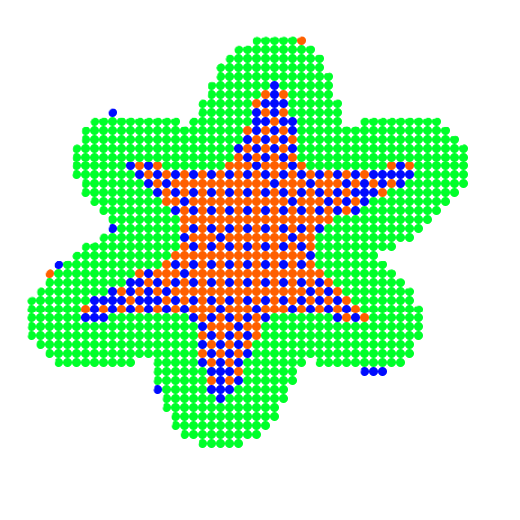
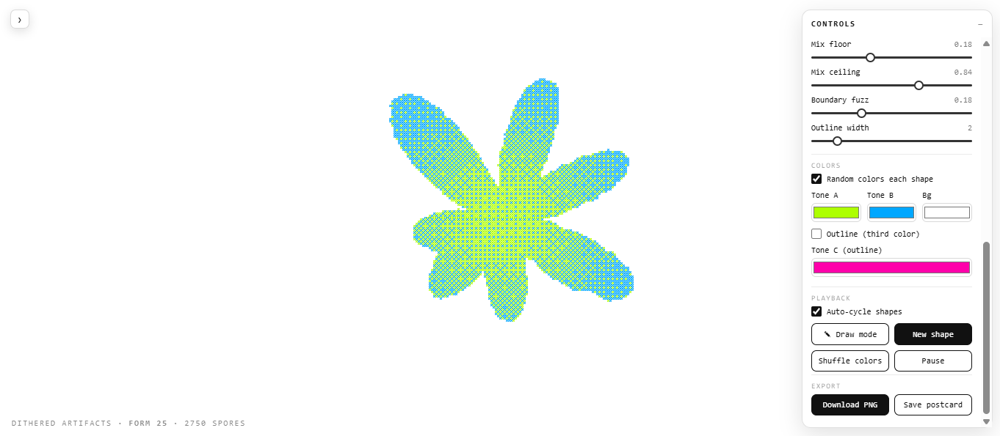
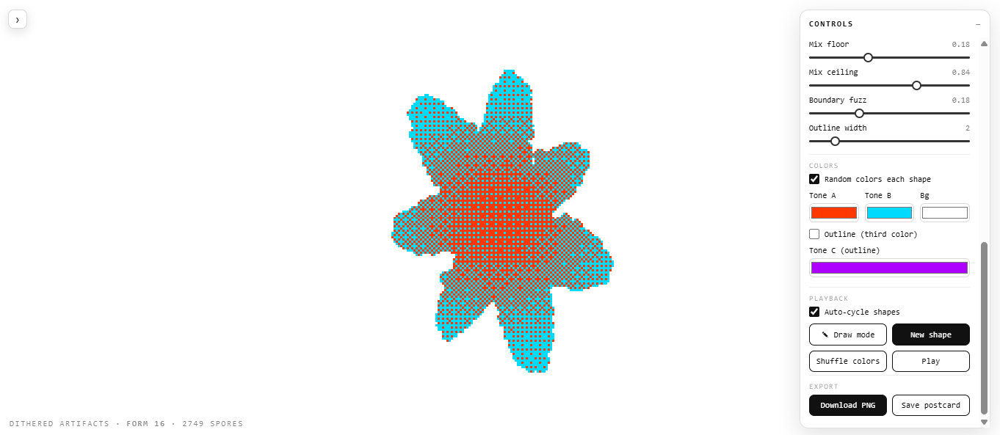
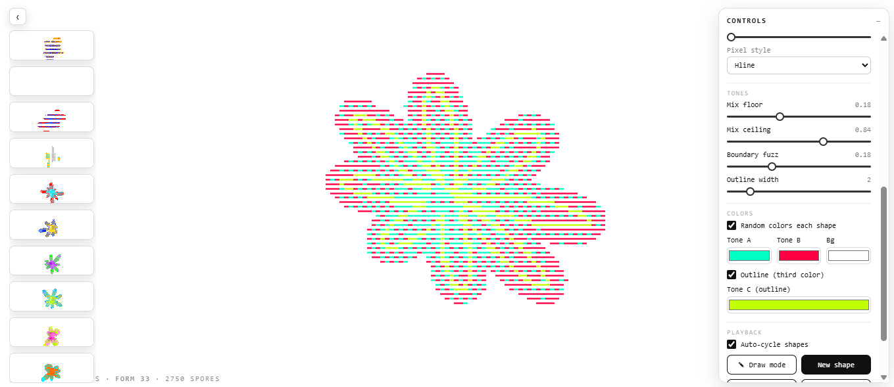
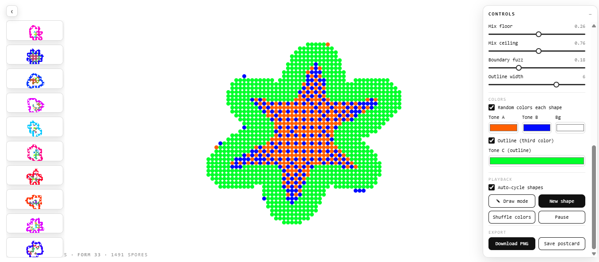

Cada ciclo empieza con una sola espora. Se divide, sus hijas se dividen, y así hasta que unas 1.500 llenan el interior de un contorno nuevo. Cuando termina, se disuelve y arranca otra: la pieza no se guarda, vuelve a nacer.

El contorno sale de una suma de armónicos con frecuencia, amplitud y fase al azar, más elongación y rotación. No es ruido filtrado: es una función periódica cerrada. Por eso las formas salen orgánicas sin salir deformes.

Cada espora lleva un valor de mezcla del centro al borde, acotado para que los dos tonos aparezcan siempre. Bayer los entrama píxel a píxel: no hay regiones planas, hay trama. El contorno se traza en un tercer color, complementario a los dos rellenos.

Cuadrado, círculo, punto, rombo, cruz, equis, anillo y líneas: la trama se interseca con un mosaico de forma y cambia el carácter entero de la pieza. Forma, población, render, tonos y color se editan en vivo — y lo que salga bien se baja en PNG.